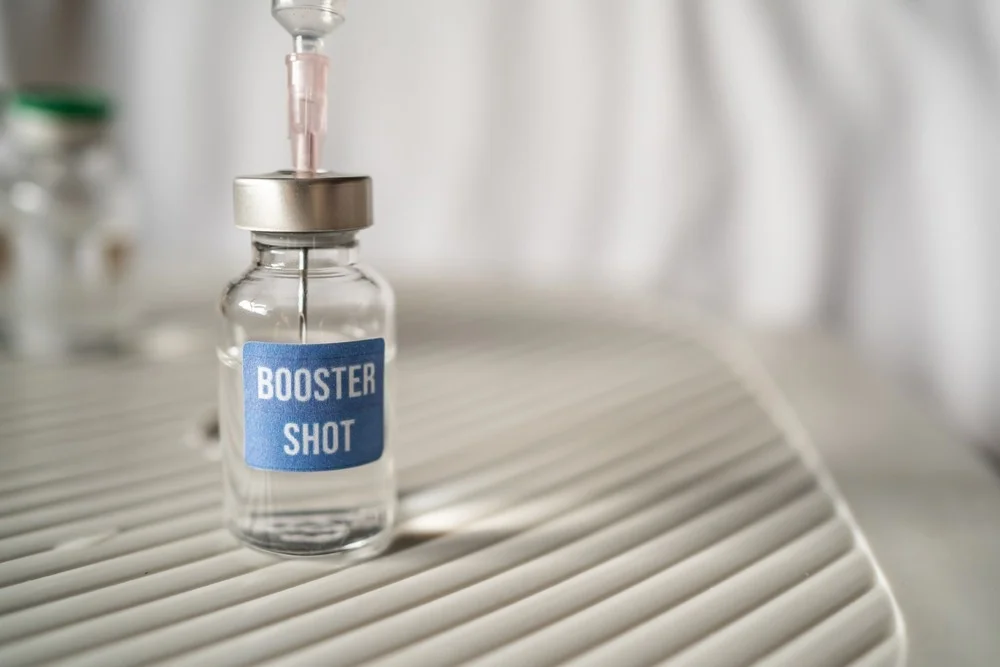

Trending in Science
Starship
55.5K Tweets
Sports Trending
Joe Rogan
5218 Tweets
Science Trending
Apple
10218 Tweets

The New York Times

CNN's Cuomo conundrum: A star anchor with a brother in trouble
COVID-19 LIVE
COVID-19: News and updates for Massachusetts
The New York Times
Apple Iphone 15 release date
Monkey Pox LIVE
MonkeyPox: News and updates for Massachusetts
Bloomberg Opinion
Thinking about a booster? Read this first.

Trending in United States
Wonder Bread
1259 Tweets